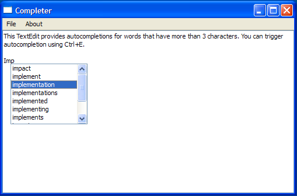

Custom Completer Example
The Custom Completer example shows how to provide string-completion facilities for an input widget based on data provided by a model. The completer pops up suggestions for possible words based on the first three characters input by the user and the user's choice of word is inserted into the TextEdit using QTextCursor.

Setting Up The Resource File
The Custom Completer example requires a resource file, wordlist.txt, that has a list of words to help QCompleter complete words. This file contains the following:
<!DOCTYPE RCC><RCC version="1.0">
<qresource prefix="/">
<file>resources/wordlist.txt</file>
</qresource>
</RCC>
TextEdit Class Definition
The TextEdit class is a subclass of QTextEdit with a custom insertCompletion() slot and it reimplements the keyPressEvent() and the focusInEvent() functions. TextEdit also contains a private function textUnderCursor() and a private instance of QCompleter, c.
class TextEdit : public QTextEdit { Q_OBJECT public: TextEdit(QWidget *parent = nullptr); ~TextEdit(); void setCompleter(QCompleter *c); QCompleter *completer() const; protected: void keyPressEvent(QKeyEvent *e) override; void focusInEvent(QFocusEvent *e) override; private slots: void insertCompletion(const QString &completion); private: QString textUnderCursor() const; private: QCompleter *c = nullptr; };
TextEdit Class Implementation
The constructor for TextEdit constructs a TextEdit with a parent and initializes c. The instructions to use the completer is displayed on the TextEdit object, using the setPlainText() function.
TextEdit::TextEdit(QWidget *parent) : QTextEdit(parent) { setPlainText(tr("This TextEdit provides autocompletions for words that have more than" " 3 characters. You can trigger autocompletion using ") + QKeySequence("Ctrl+E").toString(QKeySequence::NativeText)); }
In addition, TextEdit also includes a default destructor:
TextEdit::~TextEdit() { }
The setCompleter() function accepts a completer and sets it up. We use if (c) to check if c has been initialized. If it has been initialized, the QObject::disconnect() function is invoked to disconnect the signal from the slot. This is to ensure that no previous completer object is still connected to the slot.
void TextEdit::setCompleter(QCompleter *completer) { if (c) c->disconnect(this); c = completer; if (!c) return; c->setWidget(this); c->setCompletionMode(QCompleter::PopupCompletion); c->setCaseSensitivity(Qt::CaseInsensitive); QObject::connect(c, QOverload<const QString &>::of(&QCompleter::activated), this, &TextEdit::insertCompletion); }
We then instantiate c with completer and set it as TextEdit's widget. The completion mode and case sensitivity are also set and then we connect the activated() signal to the insertCompletion() slot.
The completer() function is a getter function that returns c.
QCompleter *TextEdit::completer() const { return c; }
The completer pops up the options available, based on the contents of wordlist.txt, but the text cursor is responsible for filling in the missing characters, according to the user's choice of word.
Suppose the user inputs "ACT" and accepts the completer's suggestion of "ACTUAL". The completion string is then sent to insertCompletion() by the completer's activated() signal.
The insertCompletion() function is responsible for completing the word using a QTextCursor object, tc. It validates to ensure that the completer's widget is TextEdit before using tc to insert the extra characters to complete the word.
void TextEdit::insertCompletion(const QString &completion) { if (c->widget() != this) return; QTextCursor tc = textCursor(); int extra = completion.length() - c->completionPrefix().length(); tc.movePosition(QTextCursor::Left); tc.movePosition(QTextCursor::EndOfWord); tc.insertText(completion.right(extra)); setTextCursor(tc); }
The figure below illustrates this process:

completion.length() = 6
c->completionPrefix().length()=3
The difference between these two values is extra, which is 3. This means that the last three characters from the right, "U", "A", and "L", will be inserted by tc.
The textUnderCursor() function uses a QTextCursor, tc, to select a word under the cursor and return it.
QString TextEdit::textUnderCursor() const { QTextCursor tc = textCursor(); tc.select(QTextCursor::WordUnderCursor); return tc.selectedText(); }
The TextEdit class reimplements focusInEvent() function, which is an event handler used to receive keyboard focus events for the widget.
void TextEdit::focusInEvent(QFocusEvent *e) { if (c) c->setWidget(this); QTextEdit::focusInEvent(e); }
The keyPressEvent() is reimplemented to ignore key events like Qt::Key_Enter, Qt::Key_Return, Qt::Key_Escape, Qt::Key_Tab, and Qt::Key_Backtab so the completer can handle them.
If there is an active completer, we cannot process the shortcut, Ctrl+E.
void TextEdit::keyPressEvent(QKeyEvent *e) { if (c && c->popup()->isVisible()) { // The following keys are forwarded by the completer to the widget switch (e->key()) { case Qt::Key_Enter: case Qt::Key_Return: case Qt::Key_Escape: case Qt::Key_Tab: case Qt::Key_Backtab: e->ignore(); return; // let the completer do default behavior default: break; } } const bool isShortcut = (e->modifiers().testFlag(Qt::ControlModifier) && e->key() == Qt::Key_E); // CTRL+E if (!c || !isShortcut) // do not process the shortcut when we have a completer QTextEdit::keyPressEvent(e);
We also handle other modifiers and shortcuts for which we do not want the completer to respond to.
const bool ctrlOrShift = e->modifiers().testFlag(Qt::ControlModifier) ||
e->modifiers().testFlag(Qt::ShiftModifier);
if (!c || (ctrlOrShift && e->text().isEmpty()))
return;
static QString eow("~!@#$%^&*()_+{}|:\"<>?,./;'[]\\-="); // end of word
const bool hasModifier = (e->modifiers() != Qt::NoModifier) && !ctrlOrShift;
QString completionPrefix = textUnderCursor();
if (!isShortcut && (hasModifier || e->text().isEmpty()|| completionPrefix.length() < 3
|| eow.contains(e->text().right(1)))) {
c->popup()->hide();
return;
}
if (completionPrefix != c->completionPrefix()) {
c->setCompletionPrefix(completionPrefix);
c->popup()->setCurrentIndex(c->completionModel()->index(0, 0));
}
QRect cr = cursorRect();
cr.setWidth(c->popup()->sizeHintForColumn(0)
+ c->popup()->verticalScrollBar()->sizeHint().width());
c->complete(cr); // popup it up!
}
Finally, we pop up the completer.
MainWindow Class Definition
The MainWindow class is a subclass of QMainWindow and implements a private slot, about(). This class also has two private functions, createMenu() and modelFromFile() as well as private instances of QCompleter and TextEdit.
class MainWindow : public QMainWindow { Q_OBJECT public: MainWindow(QWidget *parent = nullptr); private slots: void about(); private: void createMenu(); QAbstractItemModel *modelFromFile(const QString& fileName); QCompleter *completer = nullptr; TextEdit *completingTextEdit; };
MainWindow Class Implementation
The constructor constructs a MainWindow with a parent and initializes the completer. It also instantiates a TextEdit and sets its completer. A QStringListModel, obtained from modelFromFile(), is used to populate the completer. The MainWindow's central widget is set to TextEdit and its size is set to 500 x 300.
MainWindow::MainWindow(QWidget *parent) : QMainWindow(parent) { createMenu(); completingTextEdit = new TextEdit; completer = new QCompleter(this); completer->setModel(modelFromFile(":/resources/wordlist.txt")); completer->setModelSorting(QCompleter::CaseInsensitivelySortedModel); completer->setCaseSensitivity(Qt::CaseInsensitive); completer->setWrapAround(false); completingTextEdit->setCompleter(completer); setCentralWidget(completingTextEdit); resize(500, 300); setWindowTitle(tr("Completer")); }
The createMenu() function creates the necessary QAction objects needed for the "File" and "Help" menu and their triggered() signals are connected to the quit(), about(), and aboutQt() slots respectively.
void MainWindow::createMenu() { QAction *exitAction = new QAction(tr("Exit"), this); QAction *aboutAct = new QAction(tr("About"), this); QAction *aboutQtAct = new QAction(tr("About Qt"), this); connect(exitAction, &QAction::triggered, qApp, &QApplication::quit); connect(aboutAct, &QAction::triggered, this, &MainWindow::about); connect(aboutQtAct, &QAction::triggered, qApp, &QApplication::aboutQt); QMenu *fileMenu = menuBar()->addMenu(tr("File")); fileMenu->addAction(exitAction); QMenu *helpMenu = menuBar()->addMenu(tr("About")); helpMenu->addAction(aboutAct); helpMenu->addAction(aboutQtAct); }
The modelFromFile() function accepts a fileName and attempts to extract the contents of this file into a QStringListModel. We display the Qt::WaitCursor when we are populating the QStringList, words, and restore the mouse cursor when we are done.
QAbstractItemModel *MainWindow::modelFromFile(const QString& fileName) { QFile file(fileName); if (!file.open(QFile::ReadOnly)) return new QStringListModel(completer); #ifndef QT_NO_CURSOR QGuiApplication::setOverrideCursor(QCursor(Qt::WaitCursor)); #endif QStringList words; while (!file.atEnd()) { QByteArray line = file.readLine(); if (!line.isEmpty()) words << QString::fromUtf8(line.trimmed()); } #ifndef QT_NO_CURSOR QGuiApplication::restoreOverrideCursor(); #endif return new QStringListModel(words, completer); }
The about() function provides a brief description about the Custom Completer example.
void MainWindow::about() { QMessageBox::about(this, tr("About"), tr("This example demonstrates the " "different features of the QCompleter class.")); }
main() Function
The main() function instantiates MainWindow and invokes the show() function.
int main(int argc, char *argv[]) { QApplication app(argc, argv); MainWindow window; window.show(); return app.exec(); }